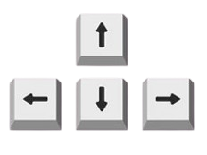
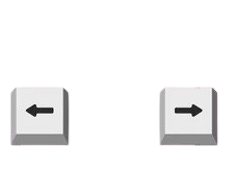
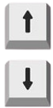

Movimentação e Rotação das Peças

Use essas setas para Movimentação e Rotação das Peças.

Essas setas servem para a movimentação das peças (Esquerda e Direita).

A seta de "descer" faz com que a peça desça mais rápido e a de "subir" faz a peça se rotacionar.